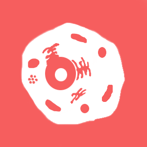
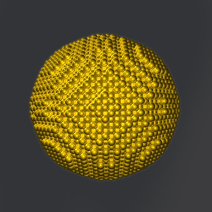

Individual and collaborative projects
LoCality
Rate your landlord, anonymously.
LoCality allows UC Berkeley students to rate their landlords anonymously (in progress). Students can "sponsor" their landlords, if they feel that their landlord deserving. A sponsorship gives the landlord access to advertisement on the UC Berkeley specific leasing and subletting portion of the website. Skills used include HTML, CSS, JavaScript, SQLAlchemy, Flask.
Student Progress Tracker
Track your progress.
The Student Progress Tracker was created for students at Commack High School, to keep track of assignments and hours completed for classes occurring outside of school hours. This app implemented an automated emailing feature, which allowed students and teachers to keep up to date on class requirements. The calendar interface is customizable to teacher- approved goals for the week, allowing students and teachers to more easily keep pace with their advancement.
Student Researcher

Bioengineering/Nanomedicine
Investigation of BHBM-Grafted Gold Nanoparticles as Drug Delivery Agents for Treatment of Cryptococcosis
In this study, gold nanoparticles were fabricated, and then functionalized with a novel drug called BHBM. This drug had implications in the treatment of meningeal and pulmonary Cryptococcosis, a fungal disease. These gold nanoparticles were evaluated for efficacy as a drug delivery system for treatment of meningeal and pulmonary Cryptococcosis. This project took 1st place at the New York Science and Engineering Fair.
This research was a part of the Garcia MRSEC program, under the mentorship of Dr. Miriam Rafailovich and Dr. Maurizio Del Poeta at Stony Brook University.

Bioengineering/Nanomedicine
Toward Breast Cancer Therapy and Early Tumor Detection: Receptor Mediated Cellular Uptake of Platinum Folate Nanoparticles and Their Influence on Cellular Mechanics
Folate coatings on nanoparticles have implications in targeted treatment of cancer cells, whilst platinum cancer therapies already exist and are in use. This study aimed to combine these two findings, created a methodology for synthesis of a folate coated platinum nanoparticle. The study then investigated the novel nanoparticle's uptake in breast cancer cells, and its effectiveness in selective elimination of cancerous cells. The study additionally explored an Atomic Force Microscopy method for cancer detection at the single cell level on basis of differences in rigidity of the cellular membranes of cancerous and non-cancerous cells.
This project took 3rd place at the Long Island Science and Engineering Fair.
This research was a part of the Garcia MRSEC program, under the mentorship of Dr. Miriam Rafailovich and at Stony Brook University.